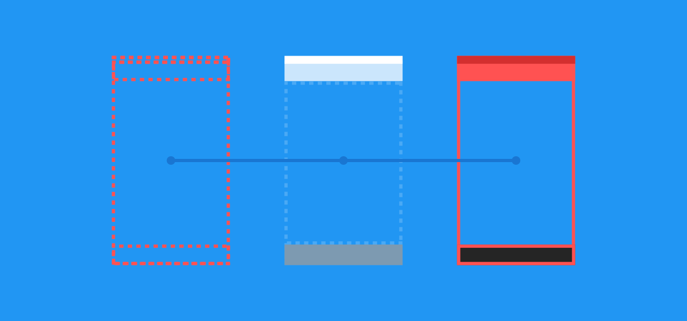
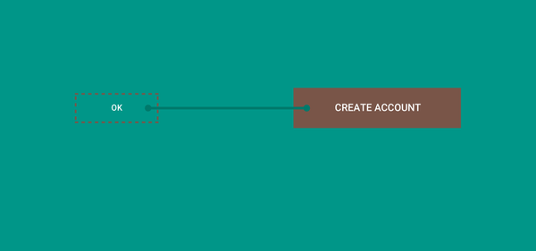

androiddev Shared Element Transitions - Updates I didn't expect to get so many views on my Shared Element Transition blog series. But making it into Android Dev Digest and Android Weekly has increased the number of people looking at
 sharedelementtranistions Shared Element Transitions - Part 5: Fixing Flashing/Blinking In part 4 of the series we explored combining Shared Element Transitions with RecyclerView.In part 5 we're going to fix the white flashing or blinking that you may have seen throughout the
androiddev Shared Element Transitions - Part 4: RecyclerView In part 3 of the series we looked at how to implement Shared Element Transitions when using Picasso or Glide.In part 4 we're going to look at implementing them with RecyclerView, a
 androiddev Shared Element Transitions - Part 3: Picasso & Glide In part 2 of this series we looked at guidelines for implementing our Shared Element Transitions and also how we utilise them when going from Fragment to Fragment.In part 3 we're going
androiddev Shared Element Transitions - Part 2: Fragments In part 1 we learned what Shared Element Transitions are, how they work and a simple example using Activity to Activity.In part 2 we're going to learn a little more on how
androiddev Shared Element Transitions - Part 1: Activities Shared Element Transitions are a great way of implementing Material motion and adding some flair to your app. Shared element transitions help the user on their journey through your app by giving them